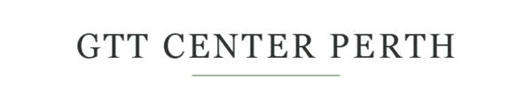

<!--
  Reusable email header partial (docs/brand-guide.md §8 spec: logo centred,
  Morning Blush background, max-width 600px). Table-based layout
  deliberately — email clients (Outlook especially) do not reliably
  support modern CSS layout, so table markup is the correct, professional
  choice here, not a legacy shortcut. Uses web-safe Georgia (not
  Cormorant Garamond directly) in the fallback <td> text, since Google
  Fonts do not load reliably across email clients; the embedded PNG
  (email-header-wordmark.png, rasterised from the same wordmark.svg
  source) is the primary visual, with the text as an accessible/
  image-blocked fallback. WORKING PLACEHOLDER NAME — see wordmark.svg's
  header comment for the single edit points.
-->
<table role="presentation" width="100%" cellpadding="0" cellspacing="0" style="background-color:#F0E0D6;">
  <tr>
    <td align="center" style="padding: 32px 16px;">
      <table role="presentation" width="600" cellpadding="0" cellspacing="0" style="max-width:600px;">
        <tr>
          <td align="center">
            
            <!-- Accessible / image-blocked fallback text, web-safe font -->
            <div style="display:none; font-family: Georgia, 'Times New Roman', serif; color:#2E3330; font-size:24px; letter-spacing:2px;">
              GTT CENTER PERTH
            </div>
          </td>
        </tr>
      </table>
    </td>
  </tr>
</table>
